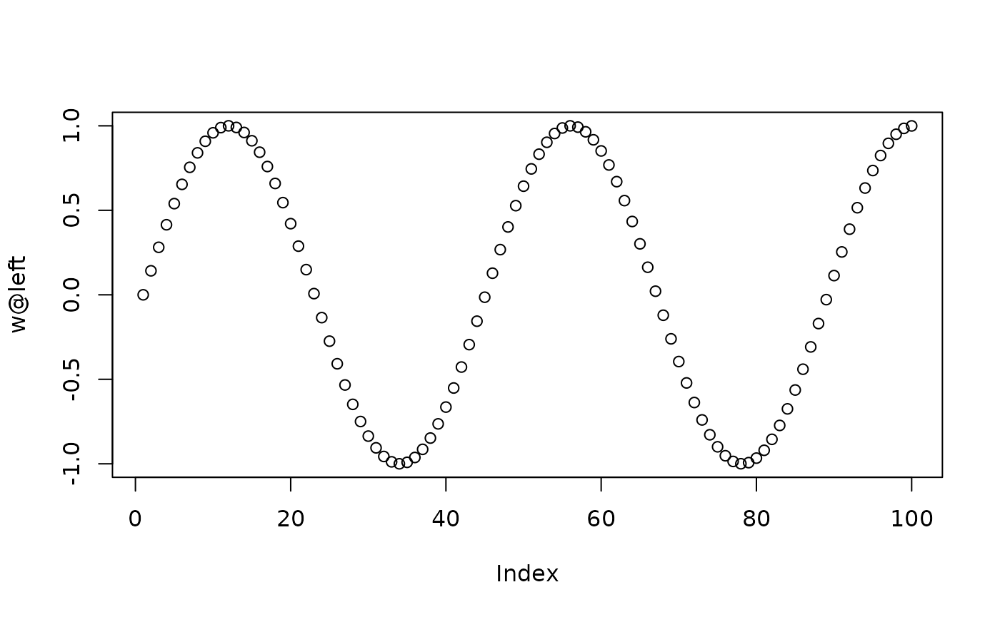
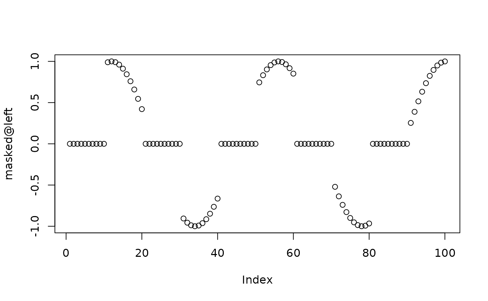

Augmenting audio data in R with SonicScrewdriveR
Source:vignettes/articles/augment-audio-data.Rmd
augment-audio-data.Rmd
library(sonicscrewdriver)
#> Warning: S3 method 'as.data.frame.Annotation' was declared in NAMESPACE but not
#> foundIntroduction
Augmenting data is a common practice in machine learning. It is the
process of creating new data from existing data (e.g. by adding noise).
This is done to increase the size of the training data and to make the
model more robust. This article will show how to augment audio data in R
using the sonicscrewdriver package.
All of the generateX() functions in
sonicscrewdriver are designed to operate on
Wave-like objects (Wave or WaveMC
from tuneR of their Tagged equivalents) or a list of
Wave-like objects. Similarly, all of these functions return
a list of Wave-like objects. This means that you can chain
these functions together to create complex data augmentation
pipelines.
Types of augmentation
In order to demonstrate the data augmentation process, we will use
the sonicscrewdriver package to generate a Dirac pulse.

Noise augmentation
Noise augmentation is a common technique used to increase the size of
the training data. It is the process of adding noise to the original
data. The sonicscrewdriver package provides the
generateNoise() function to add noise to audio data.
In this example we will add two different amounts of white noise to the Dirac pulse.
augmented <- c(
generateNoise(p, "white", noise.ratio=0.1),
generateNoise(p, "white", noise.ratio=0.3)
)
for (i in 1:length(augmented)) {
seewave::oscillo(augmented[[i]])
}Time shifting (rotation/padding)
Time shifting is the process of shifting the audio data by a certain
number of samples. The sonicscrewdriver package provides
the generateTimeShift() function to rotate audio data,
either rotating the audio data within the file, or padding the file with
silence.
To demonstrate time shifting we will generate the sum of a sine wave and a Dirac pulse.
p1 <- tuneR::sine(440, duration=44100*3)
p2 <- pulse("dirac", duration=44100*3)
p <- 0.25*p1 + normalise(p2)
seewave::oscillo(p)
Time shifting by inserting silence.
# Rotate the audio data by one second
rotated <- generateTimeShift(p, amount=1)
seewave::oscillo(rotated[[1]])Alternatively, we can rotate the audio data.
# Rotate the audio data by one second
rotated <- generateTimeShift(p, type="rotate", amount=1)
seewave::oscillo(rotated[[1]])Time-masking
Time-masking is the process of zeroing a section of the audio data.
The sonicscrewdriver package provides the
generateTimeMask() function to mask a section of the audio
data.
To demonstrate time masking we first generate a sine wave.
# Generate a sine wave
w <- tuneR::sine(1000, duration=100)
# Plot the left audio channel
plot(w@left)
Random masking sets a random section of the audio data to zero. In the example below we use a duty cycle of 0.95, which means that 5% of the audio data will be set to zero.
# Mask the audio data
masked <- generateTimeMask(w, method="random", dutyCycle=0.95)
plot(masked@left)
It is also possible to introduce masking using a square wave. The
n.periods parameter controls the number of periods in the
square wave, and the dutyCycle parameter controls the duty
cycle of the square wave.
# Mask the audio data
masked <- generateTimeMask(w, method="squarewave", dutyCycle=0.5, n.periods=5)
plot(masked@left)
Combining augmentations
The sonicscrewdriver package allows you to chain
together multiple augmentations to create complex data augmentation
pipelines. For example, you can add noise to the audio data and then
rotate the audio data.
# Load some test audio data
f <- system.file("extdata", "AUDIOMOTH.flac", package="sonicscrewdriver")
w <- readAudio(f)
# Add noise to the audio data and then rotate the audio data using pipes
augmented <-
w |>
generateNoise("white", noise.ratio=0.1) |>
generateTimeShift(amount=1)
# Create list of data and augmentations
data <- c(w, augmented)It is possible to use anonymous functions to add multiple augmentations in a single step. This can be effectively used to generate large amounts of augmented data. The code below generates three different noise augmented versions of an input, and then two different time-shifted versions of each of those, yielding six augmented versions.
# Load some test audio data
f <- system.file("extdata", "AUDIOMOTH.flac", package="sonicscrewdriver")
w <- readAudio(f)
# Add noise to the audio data and then rotate the audio data using pipes
augmented <-
w |>
{\(x) c(generateNoise(x, "white", noise.ratio=0.1),
generateNoise(x, "white", noise.ratio=0.3),
generateNoise(x, "white", noise.ratio=0.5))
}() |>
{\(x) c(generateTimeShift(x, amount=1),
generateTimeShift(x, amount=2))
}()
# Create list of data and augmentations
data <- c(w, augmented)The same approach can be used with a list of initial
Wave-like objects.
# Load some test audio data
f <- system.file("extdata", "AUDIOMOTH.flac", package="sonicscrewdriver")
w <- list(
readAudio(f),
readAudio(f),
readAudio(f)
)
# Add noise to the audio data and then rotate the audio data using pipes and anonymous functions
augmented <-
w |>
{\(x) c(generateNoise(x, "white", noise.ratio=0.1),
generateNoise(x, "white", noise.ratio=0.3),
generateNoise(x, "white", noise.ratio=0.5))
}() |>
{\(x) c(generateTimeShift(x, amount=1),
generateTimeShift(x, amount=2))
}()
# Create list of data and augmentations
data <- c(w, augmented)